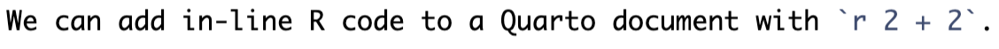

{kind=link}
{kind=link}
model1 <- lm(formula = dist ~ speed, data = cars)
model1
Call:
lm(formula = dist ~ speed, data = cars)
Coefficients:
(Intercept) speed
-17.579 3.932 read_csv()library(dplyr)library(ggplot2)%\>% or |>The Great British Bake Off (GBBO) is a popular show about a baking competition in Great Britain. Each week contestants compete in a three-round baking competition. The second round is always the technical challenge, where bakers try to finish a challenging bake with intentionally vague instructions. Data analysis should never feel like a technical challenge from the GBBO.
Our analyses should be captured from start to finish by code stored in a script or scripts. If we think of a script as a recipe, we want to capture every step from buying the ingredients for a bake all the way to how we put the bake on the table. Ideally, we want to clearly capture every step with code.
Source: Qr189

Source: Jacob Applebaum
Donald Knuth, the creator of TeX and LaTeX, is a founder of literate programming. Here is Donald Knuth’s motivation according to Donald Knuth:
Let us change our traditional attitude to the construction of programs: Instead of imagining that our main task is to instruct a computer what to do, let us concentrate rather on explaining to human beings what we want a computer to do. ~ (knuth1984?)
We used a linear model because there is reason to believe that the population model is linear. The observations are independent and the errors are independently and identically distributed with an approximately normal distribution.
model1 <- lm(formula = dist ~ speed, data = cars)
model1
Call:
lm(formula = dist ~ speed, data = cars)
Coefficients:
(Intercept) speed
-17.579 3.932 An increase in travel speed of one mile per hour is associated with a 3.93 foot increase in stopping distance on average.
.qmd files can be used interactively and they can be used as executables by clicking Render. Clicking the “Render” button starts the rendering process.
library(knitr) and “knits” .qmd (Quarto files) into .md (Markdown files)..md file into any specified output type.Quarto and library(knitr) don’t need to be explicitly loaded and most of the magic happens “under the hood.” Quarto, library(knitr), and Pandoc are all installed with RStudio.2
The “Render” workflow has a few advantages:
.qmdYAML stands for “yet another markup language.” The YAML header contains meta information about the document including output type, document settings, and parameters that can be passed to the document. The YAML header starts with --- and ends with ---.
Here is the simplest YAML header for a PDF document:
---
format: html
---YAML headers can contain many output specific settings. This YAML header creates an HTML document with code folding and a floating table of contents:
---
format:
html:
code-fold: true
toc: true
--- Markdown is a shortcut for Hyper Text Markup Language (HTML). Essentially, simple meta characters corresponding to formatting are added to plain text.
Titles and subtitltes
------------------------------------------------------------
# Title 1
## Title 2
### Title 3
Text formatting
------------------------------------------------------------
*italic*
**bold**
`code`
Lists
------------------------------------------------------------
- Bulleted list item 1
- Item 2
- Item 2a
- Item 2b
1. Item 1
2. Item 2
Links and images
------------------------------------------------------------
[text](http://link.com)

More frequently, code is added in code chunks:
```{r}
2 + 2
```[1] 4The first argument inline or in a code chunk is the language engine. Most commonly, this will just be a lower case r.
Quarto has a rich set of options that go inside of the chunks and control the behavior of Quarto.
```{r}
#| eval: false
2 + 2
```In this case, eval makes the code not run. Other chunk-specific settings can be added inside the brackets. Here3 are the most important options:
| Option | Effect |
|---|---|
echo: false |
Hides code in output |
eval: false |
Turns off evaluation |
output: false |
Hides code output |
warning: false |
Turns off warnings |
message: false |
Turns off messages |
fig-height: 8 |
Changes figure width in inches4 |
fig-width: 8 |
Changes figure height in inches |
My attempt at making reproducible research more fun.↩︎
Rendering to PDF requires a LaTeX distribution. Follow these instructions to install library(tinytex) if you want to make PDF documents.↩︎
This table was typed as Markdown code. But sometimes it is easier to use a code chunk to create and print a table. Pipe any data frame into knitr::kable() to create a table that will be formatted in the output of a rendered Quarto document.↩︎
The default dimensions for figures change based on the output format. Visit here to learn more.↩︎